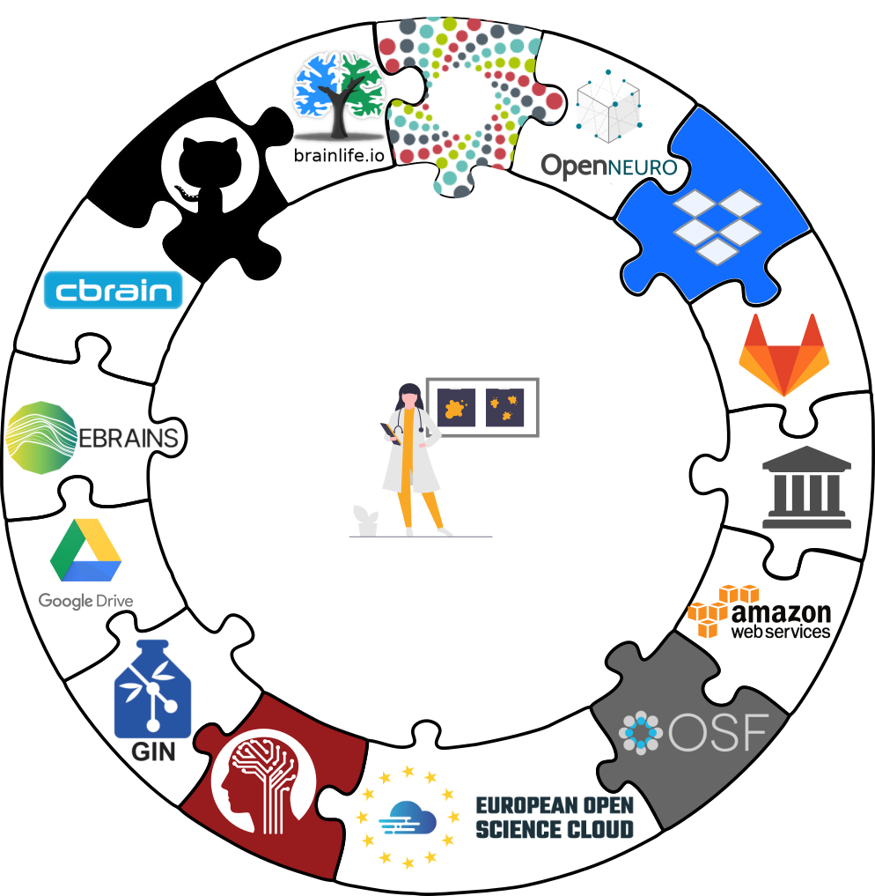

Decentralized Management
|
Adina Wagner
 @AdinaKrik
@AdinaKrik |
||
|
Psychoinformatics lab,
Institute of Neuroscience and Medicine, Brain & Behavior (INM-7) Research Center Jülich |
| Debian in Arts & Science |
Acknowledgements
|
Funders


Collaborators
|
Perks of being a (neuro)scientist...
A growing culture of open data

Perks of being a (neuro)scientist...
... with many open dataset of several TB of data!


Perks of being a (neuro)scientist...
A large and growing amount of open source software


... and many more! |
Perks of being a (neuro)scientist...
Many readily available, often free, sometimes FOSS, services for data storage and collaboration

Perks of being a (neuro)scientist...
Coordinated efforts towards common standards

Perks of being a (neuro)scientist...
We can work on questions targeting
treatments for mental and neural illness

Version Control
- DataLad knows two things: Datasets and files
- A DataLad dataset is a Git repository


Version Control
- Datasets can have an optional annex for (large) data. For annex'ed files, identity (hash) and location information is put into Git, rather than their content.
- Simplified local version control

Version Control
- Scaling issues with large amounts of files are overcome by seamless nesting mechanisms (super-dataset - sub-dataset relationships), based on Git submodules

adina@bulk1 in /ds/hcp/super on git:master
❱ datalad status --annex all
TODO
Transport logistics
- Datasets can be cloned, pushed, and updated from and to local paths, remote hosting services, external special remotes
- Easy and generic procedures for...
- ... data publication and updating
- ... data consumption
- ... collaboration
- ... centralized data management
- Disk-space aware workflows with git-annex's separation of file content and Git history: Cloned datasets are lean (only Git), and annexed contents can be retrieved & dropped on demand
$ datalad clone git@github.com:datalad-datasets/machinelearning-books.git
install(ok): /tmp/machinelearning-books (dataset)
$ cd machinelearning-books && du -sh
348K .$ datalad get A.Shashua-Introduction_to_Machine_Learning.pdf
get(ok): /tmp/machinelearning-books/A.Shashua-Introduction_to_Machine_Learning.pdf (file) [from web...]$ datalad drop A.Shashua-Introduction_to_Machine_Learning.pdf
drop(ok): /tmp/machinelearning-books/A.Shashua-Introduction_to_Machine_Learning.pdf (file) [checking https://arxiv.org/pdf/0904.3664v1.pdf...]Interoperability
- Minimize custom procedures and data structures (users must not loose data or data access, if DataLad would vanish), but maximize interoperability and use with established hosting and storage technology
Interoperability
- Minimize custom procedures and data structures (users must not loose data or data access, if DataLad would vanish), but maximize interoperability and use with established hosting and storage technology

- Uncompromised decentralization, no required central server or service.
Provenance capture
- Datasets can track code, data and software - and associate it with transformations/computations and derived files/results, to track the entire evolution and lineage
- "How did this file came to be?", "What steps were undertaken to transform the raw data into the published result?"


Provenance capture
- Computational provenance: DataLad can capture arbitrary dataset transformations (e.g., from computing analysis results) and record the cause of such a change
$ datalad run -m "Perform eye movement event detection"\
--input 'raw_data/*.tsv.gz' --output 'sub-*' \
bash code/compute_all.sh
-- Git commit -- Michael Hanke < ... @gmail.com>; Fri Sep 21 22:00:47 2019
[DATALAD RUNCMD] Perform eye movement event detection
=== Do not change lines below ===
{
"cmd": "bash code/compute_all.sh",
"dsid": "d2b4b72a-7c13-11e7-9f1f-a0369f7c647e",
"exit": 0,
"inputs": ["raw_data/*.tsv.gz"],
"outputs": ["sub-*"],
"pwd": "."
}
^^^ Do not change lines above ^^^
---
sub-01/sub-01_task-movie_run-1_events.png | 2 +-
sub-01/sub-01_task-movie_run-1_events.tsv | 2 +-
...Provenance capture
- Computational provenance: Datasets can track software containers, and perform and record computations inside it:
$ datalad containers-run -n nilearn \
--input 'mri/*_bold.nii --output 'sub-*/LC_timeseries_run-*.csv' \
"bash -c 'for sub in sub-*; do for run in run-1 ... run-8;
do python3 code/extract_lc_timeseries.py \$sub \$run; done; done'"
-- Git commit -- Michael Hanke < ... @gmail.com>; Fri Jul 6 11:02:28 2019
[DATALAD RUNCMD] singularity exec --bind {pwd} .datalad/e...
=== Do not change lines below ===
{
"cmd": "singularity exec --bind {pwd} .datalad/environments/nilearn.simg bash..",
"dsid": "92ea1faa-632a-11e8-af29-a0369f7c647e",
"inputs": [
"mri/*.bold.nii.gz",
".datalad/environments/nilearn.simg"
],
"outputs": ["sub-*/LC_timeseries_run-*.csv"],
...
}
^^^ Do not change lines above ^^^
---
sub-01/LC_timeseries_run-1.csv | 1 +
...Provenance capture
- All recorded transformations can be re-computed automatically
$ datalad rerun eee1356bb7e8f921174e404c6df6aadcc1f158f0
[INFO] == Command start (output follows) =====
[INFO] == Command exit (modification check follows) =====
add(ok): sub-01/LC_timeseries_run-1.csv (file)
...
save(ok): . (dataset)
action summary:
add (ok: 45)
save (notneeded: 45, ok: 1)
unlock (notneeded: 45)
...- Aid with the reproducibility of a result and verify it (via content hash)
- Use complete capture and automatic re-computation as alternative to storage and transport
Dealing with sensitive data
- Share anonymized meta data not subject to privacy concerns
- Flexible data access management - file contents can be made available to none or selected few
- Viable solution to bring the computation to the data

Open science with DataLad
As a researcher, DataLad helps me to- obtain data and update it, if necessary
- link code, data, software, and execution
- share data and collaborate
- attach suitable meta data

Further Information
- Source code: github.com/datalad/datalad
- User documentation and use cases: handbook.datalad.org
- Technical docs: docs.datalad.org
- Video tutorials: Youtube channel "DataLad"